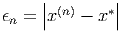
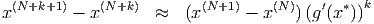
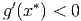
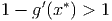
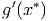

Consideremos uma matriz A ∈ ℝn,n diagonalizável, isto é, existe um conjunto {vj}j=1n de autovetores de A tais que qualquer elemento x ∈ ℝn pode ser escrito como uma combinação linear dos vj. Sejam {λj}j=1n o conjunto de autovalores associados aos autovetores tal que um deles seja dominante, ou seja,
|
| (4.26) |
 
O método da potência permite o cálculo do autovetor dominante com base no comportamento assintótico (i.e. "no infinito") da sequência
Por questões de convergência, consideramos a seguinte sequência semelhante à anterior, porém normalizada:
|
| (4.27) |
Como a norma de  é igual a um, temos  
 , então
, então
Observe que um múltiplo de autovetor também é um autovetor e, portanto,
Uma vez que temos o autovetor v1 de A, podemos calcular λ1 da seguinte forma: